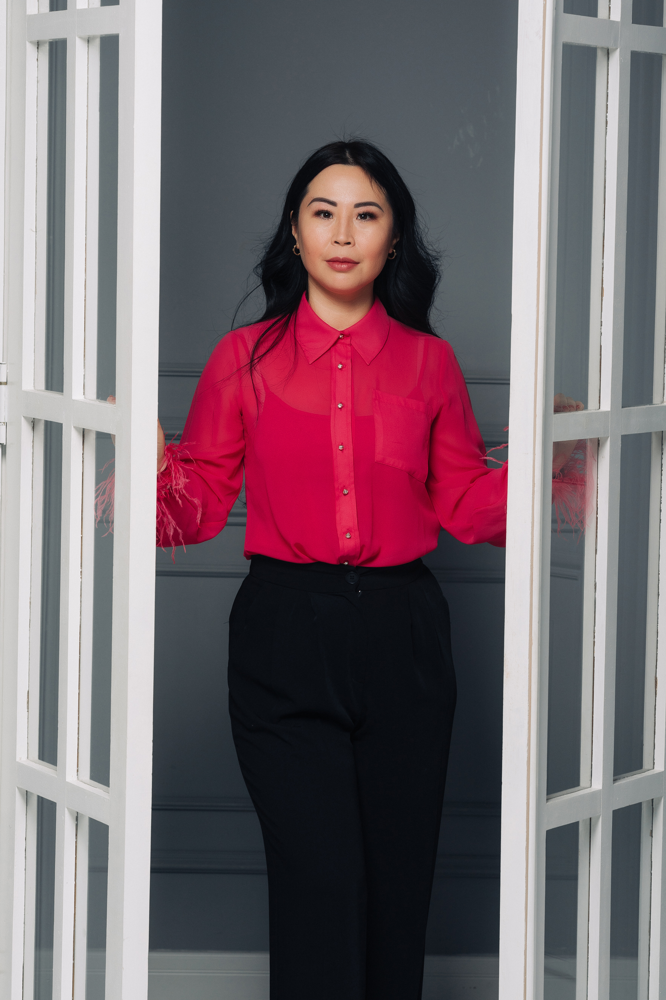
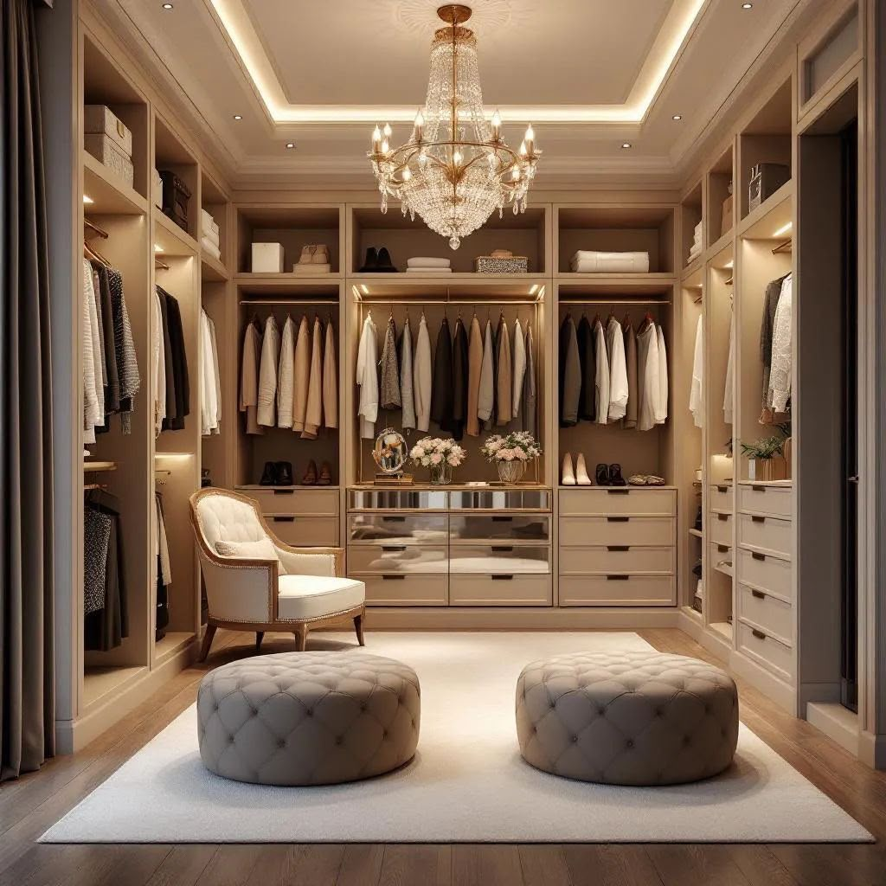
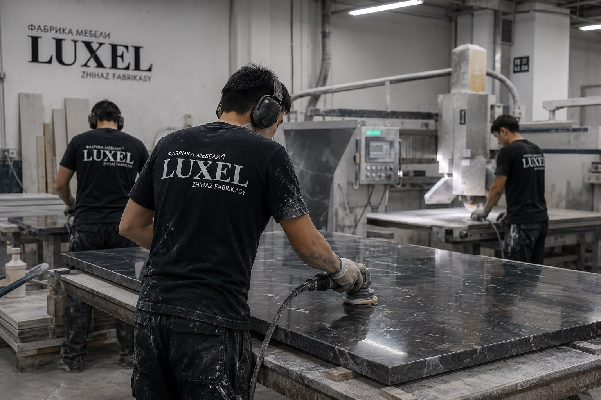
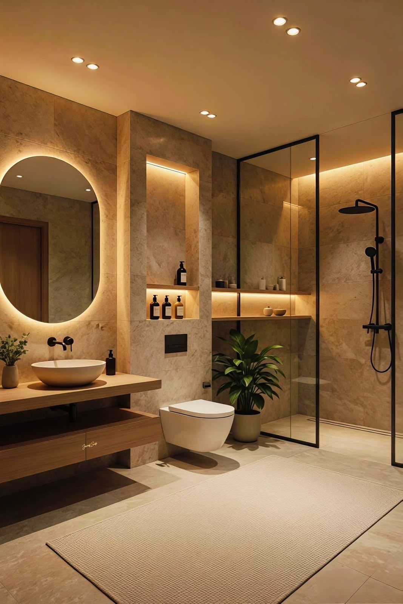
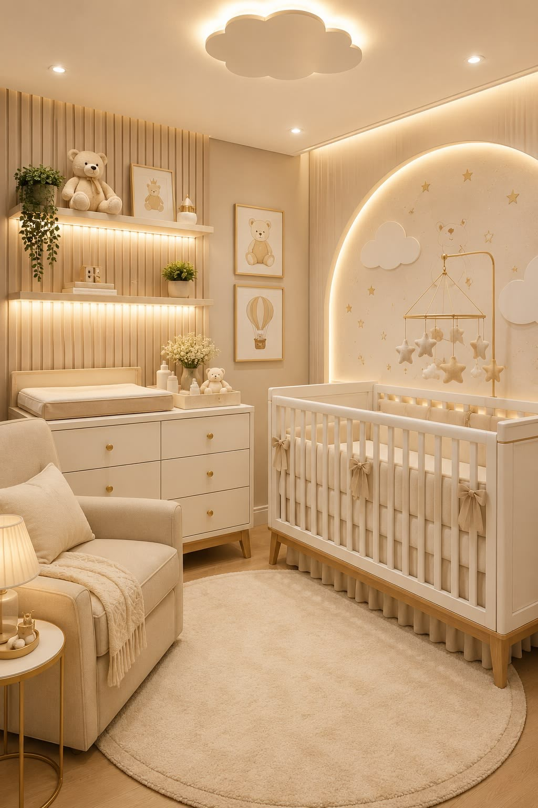

Emprendedora · Sector del mobiliario · Kazajistán
ANTONINA YESMAGULOVA
Más de 10 años creando muebles, empresas y nuevas ideas.
Su historia
TODO EMPEZÓ CON UNA COCINA
En 2013, mientras instalaban una cocina en su propia casa, Antonina empezó a preguntarse cómo funcionaba este negocio.
Estudió el mercado por su cuenta y el 1 de diciembre de 2013 comenzó su primer proyecto empresarial.
Así nació “Cinco Estrellas”.

En números
Una década convertida en escala.
El camino
De un primer proyecto a una nueva etapa.
Nace “Cinco Estrellas”.
Diez años de crecimiento en el sector del mobiliario.
Venta de “Cinco Estrellas” y comienzo de una nueva etapa.
Nace “Cocinas del Mundo”, un modelo de cocinas modulares que llegó a cuatro ciudades.
Desarrollo de LUXEL, especializada en mobiliario personalizado.
Su filosofía
NO SOLO FABRICAMOS MUEBLES.
CONSTRUIMOS CONFIANZA.
- Honestidad.
- Responsabilidad.
- Disciplina.
- Trabajo en equipo.
Para Antonina, cumplir los compromisos con el cliente es una de las bases de cualquier empresa.

Producción
DE LA IDEA AL PRODUCTO
LUXEL cuenta con una producción prácticamente de ciclo completo.
Mobiliario personalizado
Fachadas
Encimeras
Tecnología CNC
Producción propia
Aprender también es emprender
No todos los proyectos funcionan.
La experiencia de “Cocinas del Mundo” mostró que crecer sin controlar bien los costes y la rentabilidad puede convertirse en un problema.
La decisión fue parar, aprender y cambiar de dirección.
“Primero hay que construir un modelo rentable. Después, escalarlo.”
El futuro
¿QUÉ VIENE AHORA?
LUXEL
Mobiliario personalizado estable y rentable.
NUEVOS PRODUCTOS
Muebles de baño y fachadas.
B2B
Producción para otras empresas del sector.
NUEVAS IDEAS
Un sistema modular donde cada cliente pueda combinar estructuras, fachadas y elementos según su estilo y presupuesto.


EMPRENDER ES CREAR.
EQUIVOCARSE.
APRENDER.
Y VOLVER A EMPEZAR.
Antonina Yesmagulova
Emprendedora desde 2013. Instagram · @antoninayesmagulova Скачать PDF